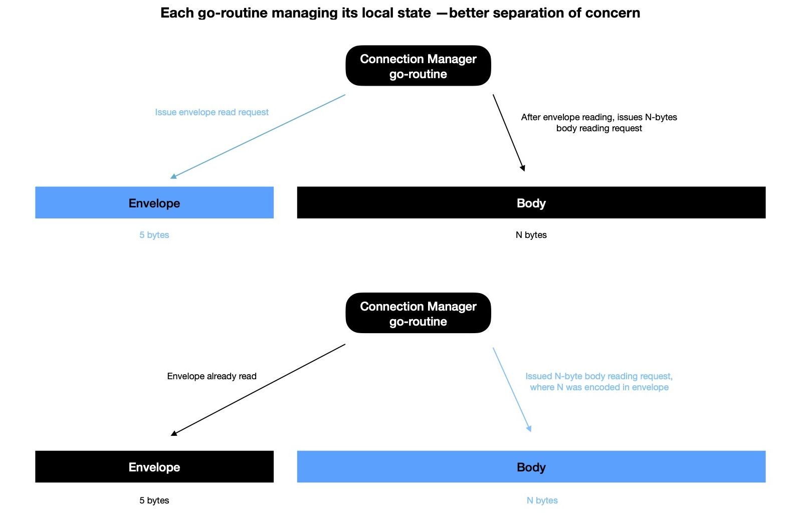
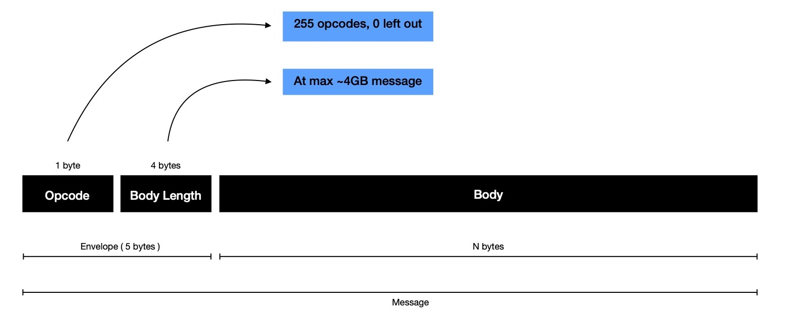

Few weeks back I started working on pub0sub - Fast, Light-weight, Ordered Pub/Sub System
leveraging power of kernel event loop, addressing C10K while running on a consumer grade machine.
pub0sub can easily handle > 10k concurrent connections even on consumer grade
machine, because it doesn't follow conventional way of writing TCP servers in Go. Generally, one
go-routine accepts TCP connection & spawns new go-routine for handling connection throughout its lifetime. This way if objective
is to handle > 10k concurrent connections, there're > 10k go-routines. Go scheduler needs
to perform expensive context switching for running go-routines on underlying OS threads. For > 10k go-routines
cost of context switching is pretty high, when no useful task gets accomplished. Also stack memory requirement
for > 10k go-routines is not something neglectable.
Avoiding aforementioned path helps in discovering another potential way, where I can ask kernel event loop to watch
file descriptors of interest & only inform when some action need to be taken. At a time any of two completion events can happen on socket
{ READ, WRITE } --- either pre-scheduled reading or writing from socket has been completed,
giving opportunity to act on it & schedule next operation. There's no more > 10k go-routines, rather only 2 go-routines ---
one used for listening & accepting TCP connections; another for watching & responding to I/O events.
It'll be perfectly okay to
add more watcher go-routines ( static, done at system startup phase ), each managing its own kernel event loop and watching some
delegated sockets. But in that case newly accepted connections
need to be fairly distributed among all event watching loops otherwise some of them becomes hotspot, resulting into
performance degradation. Some watcher does more socket watching, some does less. Even it's possible some topics
in pub/sub are popular and all subscribers interested in those topics needs to be distributed across
available watchers. For orchestrating N-sockets on available M-watchers, where N >>> M, I need to keep additional
state information in listener go-routine. It can also be further explored whether dynamic watcher adding/ removing in runtime as per system state
brings any improvement or not.
Back to current implementation, as a result, lesser time spent in context switching more time spent doing actual work. As soon as new connection
is accepted, it's delegated to watcher. On the other hand watcher waits for I/O completion events &
as soon as some of them are available to act on; it starts looping over them one-by-one ---
processing each & scheduling next action on socket.
This model of writing TCP server is performant, but brings in some complexities. Previously I could
manage each connection's whole life-cycle in its own go-routine --- seperation of concern was well respected.
As a result implementation was easier to reason about.
Say in first model, server has two clients --- each being managed in its own go-routine. Pub/Sub Hub is waiting to
read message from respective sockets, where each message has two parts
| Part | Size ( in bytes ) | Purpose |
|---|---|---|
| Envelope | 5 | Keeps OPCODE, BodyLength |
| Body | N | Keeps BodyLength-bytes actual data |
For one client, go-routine reading envelope and for another one body is being read after envelope reading is done. I'd like to highlight, messages are seperated in two parts because it helps in determining what's length of variable sized body, where envelope length is fixed at 5-bytes.

But attaining same behaviour when delegating reading from/ writing to sockets to watcher is little more involved.
For reading message envelope, request is issued; watcher informs when envelope is read. Then envelope is deserialised to
figure out how many more bytes to read from socket for consuming message body. N-bytes body reading is
again delegated to watcher, which informs as soon as it's done. Now if there're M-clients connected at this moment
each of them may be reading any possible part of message. There could be also different kinds of messages --- where OPCODE is
encoded in envelope along with body length. Reading handler function needs to remember where it left off
last time & what exactly it was doing then, so that it can keep processing later part of message.
This calls for additional state keeping --- resulting into more memory allocation than first model.
It's like when first time envelope is read, reading handler function understands what's intention of client
and how many more bytes it needs to read from socket to construct message. It puts an entry in ongoing reading
table, indexed by socket, along with OPCODE so that appropriate deserialisation
handler can be invoked when body reading will be completed; issues N-bytes body reading request; moves on to next event processing step.
After sometime when body reading is done on this socket, watcher informs, socket is looked up in ongoing reading table
to understand what has happened till now & what to do next with body. And finally intended action is taken
on received message and socket entry from ongoing reading table is removed.
In pub0sub there're two kinds of clients i.e. { publisher, subscriber }. Each of them interact with Pub/Sub server i.e. 0hub with different intention resulting into different message format. Opcode helps read handler understand how to deserialise message body or what kind of actions to take on deserialised, structured message & how to eventually respond back to client.

With all these pieces Pub/Sub Hub implementation 0hub shows quite
promising performance. I've tested it with 16k concurrent connections on consumer grade machine. I believe
if it's tested in containerised environment where virtual overlay networking can be easily used
and more ports ( = more clients ) in total are available, 0hub
will break its own record. Some other day I'd like to run that experiment.
Recently I started noticing issue with long lived TCP connections --- resulting into abnormal connection termination.
I suspect this is due to long lived TCP connections might be idle for long time if publishers are not publishing
often or subscribers have subscribed to some infrequently update receiving topics. To address this
situation I plan to add periodic heartbeat message passing between client & hub. Heartbeat messages will be of
5-bytes --- only envelope, no body. If there's no body, it denotes last 4-bytes of message envelope
will be holding 0, only first byte contains opcode --- 10 for ping, 11 for pong. For maintaining backward compatibility
envelope size can't be changed, which is why I'm wasting 4 bytes in envelope by only storing 0.
Every 30 seconds 0hub sends PING ( opcode = 10 ) message to all connected
publishers & subcribers and expects to hear back with PONG ( opcode = 11 ) message. For all those who responded
back, their next health check to be scheduled at t+30. Others who didn't respond back, they'll be
pinged again upto 3 times at max, each after 30 seconds delay. If they still don't respond back, hub terminates connection
with them while cleaning up all resources associated with respective client.
This will hopefully help hub in maintaining connection & related resources only for healthy & active clients, while enabling it
in estimating how many subscribers to receive published message on a topic with better precision.
This estimation calculation will pose a challenge during implementing distributed version of pub0sub --- which I'll
face very soon.
These PING/ PONG messages are simply an overhead, though unavoidable, consuming bandwidth overtime. But I can probably
reduce #-of health checking done. When hub and client has recently communicated for sake of their
usual business procedure, it's quite evident connection is active --- health check can be avoided. Idea is to only do
health check when hub hasn't heard from client for some time.
If some active publisher sends message publish intent every < 30s, it can avoid explicit health check cost. On other hand subscribers
listening to active topic i.e. frequent update receiving topic, can avoid
health check because connection issues will be caught when attempting to push update. That's why I call
health check LAZY.
As each health check message & response wastes 4-bytes for sake of backward compatibility, it's better
to keep its usage as low as possible.
Another way I'm looking at --- it's possible to send PING ( opcode = 10 ) message from hub to client
of only 1-byte length i.e. OPCODE part of whole message, but when client responds back with PONG ( opcode = 11 )
then need to send only envelope i.e. 5-bytes, as proposed 👆. This way communication pattern becomes
somewhat asymmetric, but helps in saving 4-bytes, resulting into health check round-trip with 6-bytes
instead of previous 10-bytes.
Current version of pub0sub is here.
I'd love to get feedback and have a great time !